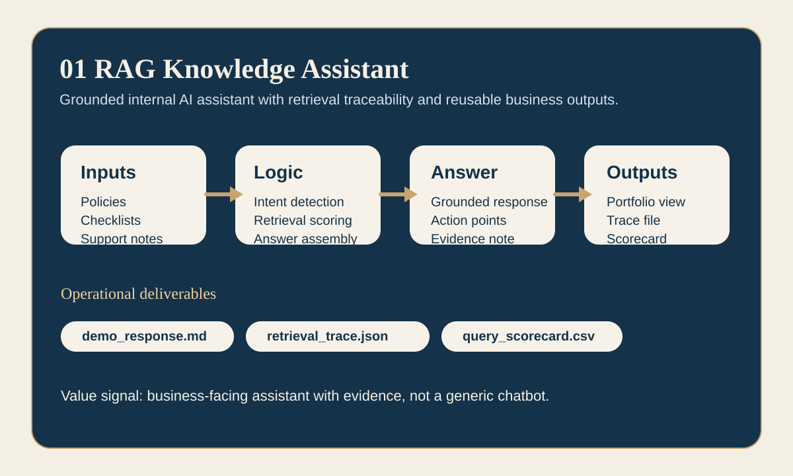
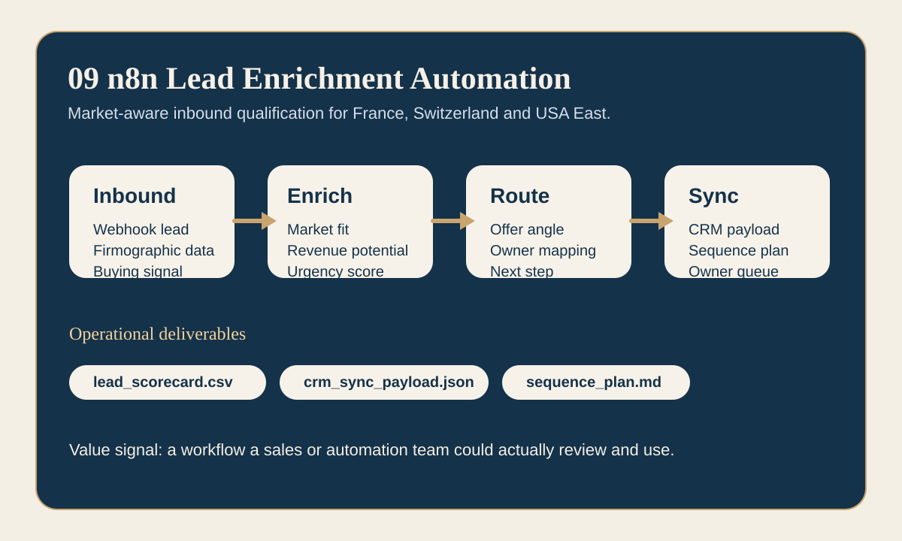
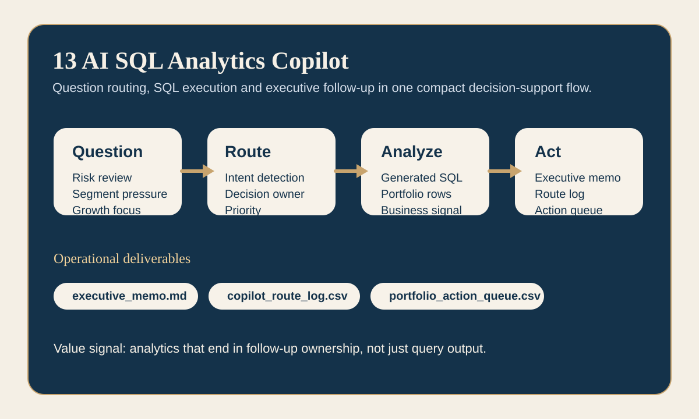
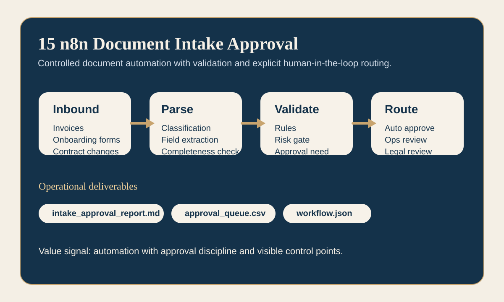
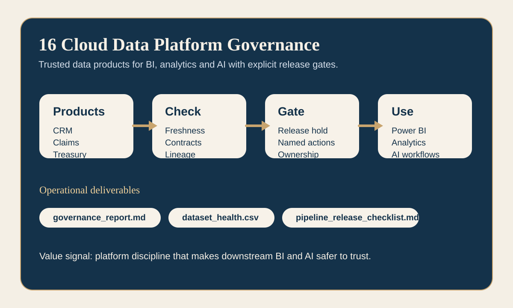

01 RAG Knowledge Assistant
Grounded internal assistant with retrieval traceability and portfolio-style review outputs.
A static demo hub built to make the repository easier to review in a short window. It highlights operational outputs, flagship flows and one recruiter-friendly KPI demo.
The repository already has breadth. This page focuses on the quickest proof points: grounded AI assistance, analytics copilot delivery, workflow automation and governance-aware data delivery.

Grounded internal assistant with retrieval traceability and portfolio-style review outputs.

Market-aware qualification workflow with CRM sync and immediate outreach planning.

Business question routing, SQL reasoning and leadership-ready memo plus action queue.

Document classification and approval routing with explicit human review checkpoints.

Trusted data-product review with release gates before BI and AI consumption.
The upgraded lead-qualification workflow now reflects France, Switzerland and USA East with clear offer-angle and ownership outputs.
| Company | Market | Score | Offer Angle | Owner |
|---|